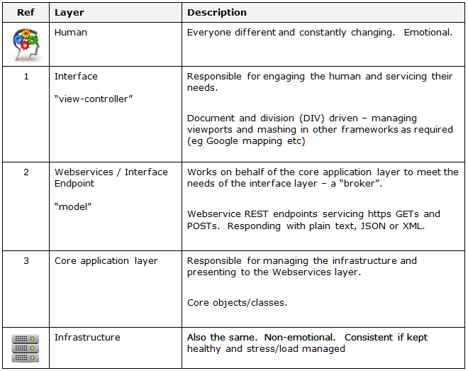

| |
GETTING STARTED
USER EXPERIENCE DESIGN (UXD) / MADE
To get the maximum value out of an information application, the user experience is key - we call our approach to this the "human engagement framework" (pdf) - of which the mydigitalsructure platform is a part.
The associated application framework is based on the principles of:
- layering (with appropriate specialists working on layer)
- model-view-controller (MVC)
- manage-analyse-design-execute (MADE)
More about UX | UXD | Fit for purpose (FFP)
|
|
| model-view-controller
Model–view–controller (MVC) is a software architecture, currently considered an architectural pattern used in software engineering.
Some reading...
|
|
|
| |
LAYERS
As used in many construction disiplines, layers are very important to allow teams of people to work together with maximum efficiency.
eg building a house, which brings together the layers of:
- Design (select existing or bespoke)
- Approval
- Foundation
- House Frame
- Roofing
- etc
APPLICATION FRAMEWORK

|
|
| Service Oriented Architecture
Service-Oriented Architecture (SOA) is a set of principles and methodologies for designing and developing software in the form of interoperable services.
Some reading...
|
|
|
|
| |
MADE PRINCIPLES
If the MADE principles are followed and the MAD component is conducted successfully, then the E (execute) component should just pull together, leveraging the mydigitalspace onDemand model and other "view-controller" resources (eg jQuery) - the overall effect is of a well synchronised machine and human experience, minimising training and human change energy.
| Manage |
Manage expecations and the process, including testing to ensure the execution matches the design.
Sample testing plan (docx) |
| Analyse |
Analyse and document the customer and user needs. |
| Design |
System and user experience design, including selection of best human interface and model interfaces (eg endpoints & methods). Example of a mapping diagram as used in Exchange integration. (psd version) |
| Execute |
Build the application - modify the model structure as required and create the view and controller logic (eg if web-based update js/jQuery scripts) |
|
|
| User Experience
"User experience" encompasses all aspects of the end-user's interaction with the company, its services, and its products. The first requirement for an exemplary user experience is to meet the exact needs of the customer, without fuss or bother.
Keep reading...
|
|
|
|